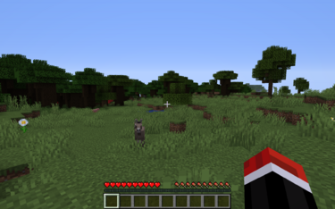
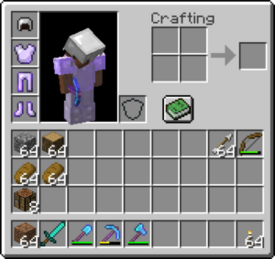
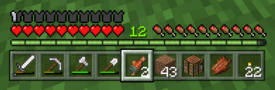
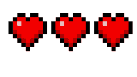
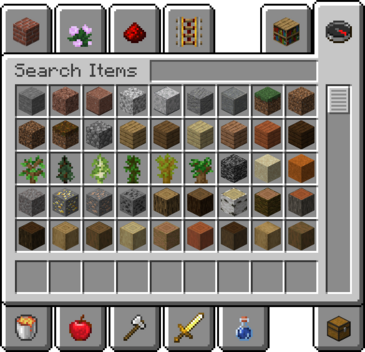
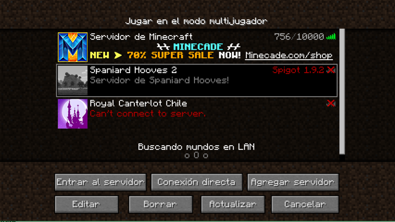
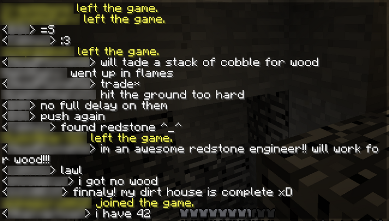
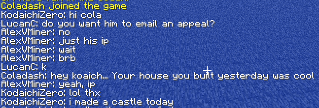
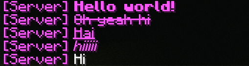

|
|
|
El modo supervivencia es un modo de juego de Minecraft en el que los jugadores tienen como objetivo recoger recursos, construir su hogar, acabar con las criaturas y explorar la tierra con la intención de sobrevivir.
|
|

Un jugador en modo supervivencia. Se observan las barras de experiencia, salud y hambre, además de su inventario principal.
|
|
Jugabilidad
|
|
El modo supervivencia para un jugador es uno de los 5 modos de juego de Minecraft. Aquí, los jugadores tienen un inventario para almacenar objetos. Estos pueden ser utilizados por el jugador o combinarse con otros utilizando recetas en los menús de fabricación.
Este proceso se conoce como fabricación, y le permite al jugador progresar a través de su partida. Otros objetos, sin embargo, no pueden fabricarse ni obtenerse naturalmente, ya que utilizan métodos como la fundición, la destilación, etc.
En supervivencia un jugador puede recibir daño de otras entidades y de su propio entorno. Si se recibe suficiente daño, el jugador muere y reaparece en su punto de reaparición. Este es el sitio en donde el jugador apareció en el mundo por defecto, pero puede ser alterado por camas
|
Caracteristicas
- Inventario
El inventario de supervivencia, como se aprecia en la imagen de la izquierda, es el lugar en donde se almacenan los objetos y elementos obtenidos. Además, es el lugar en donde se fabrican objetos en un espacio de fabricación de 2x2, guiándose con el libro de recetas.
Posee 27 espacios de almacenamiento interiores, 9 externos (la barra de acceso rápido), 4 espacios de armadura, el espacio de fabricación y un espacio de mano secundaria (a partir de la versión 1.9).
- Armadura
La armadura en el modo supervivencia aplica los efectos de los encantamientos en la mayoría de los casos, y protege al jugador del daño recibido. Por ejemplo, el encantamiento "caída de pluma" reduce el daño recibido por caer de un lugar alto.
La barra de armadura solamente representa el recuento de puntos de armadura que tiene un jugador, siendo que cuando no se tienen estos puntos no aparece, pero si se tiene alguno se rellena de forma similar a las barras de vida o hambre.
Otro efecto de armadura es la resistencia al empuje, una escala actualmente solo dada por la armadura de inframundita. Estas propiedades se aplican mejor en el modo supervivencia, aunque algunas pueden aplicarse en otros modos.
- Barras de estado
Se encuentra presente la barra de vida, la cual indica la salud del jugador, y si se pierden todos los corazones (así se representa la vida) el jugador muere y tiene que reaparecer en su punto de reaparición.
Se encuentra presente la barra de hambre, que indica cuánto puede un jugador correr y regenerar vida. Para regenerar vida debe tener más de 8 1/2 muslitos, mientras que para correr tiene que tener más de 3 muslitos. Si uno se queda sin muslitos, comienza a perder vida, y mientras mayor sea la dificultad, mayor efecto tendrá, siendo por ejemplo en la dificultad difícil que el jugador muere si no tiene puntos de hambre.
Se encuentra presente la barra de oxígeno, la cual indica cuanto tiempo un jugador puede estar debajo del agua, (Solo Bedrock Edition), o atascado en muro (Solo Bedrock Edition) sin ahogarse. Si esta barra se llega a vaciar, el jugador pierde salud hasta el punto de morir ahogado.
Sin embargo, si se juega en la dificultad pacífico, la salud se regenerará automáticamente y la barra de comida no se vería afectada, aunque el funcionamiento del oxígeno sigue siendo el mismo.
- Barra de experiencia
Se encuentra presente además una barra de experiencia, la cual indica cuántos niveles de experiencia posee un jugador. Esta es vital para encantar armas y herramientas, pues es el único medio por el que se pueden obtener objetos encantados usando una mesa de encantamientos.
Todo jugador inicia con una barra de experiencia vacía, pero se va llenando mientras se minen minerales, se cocinen o fundan objetos, se maten criaturas, se usen frascos con experiencia.
- Ataque de criaturas
Las criaturas hostiles siempre intentarán atacar a un jugador en modo supervivencia. En el caso de las criaturas neutrales, estas reaccionarán si el jugador las ataca primero. El daño causado y los efectos de estado provocados por las criaturas dependen mucho de la dificultad.
Por ejemplo: los zombis causan más daño en la dificultad difícil que en la fácil, los peces globo infligen veneno a partir de la dificultad normal, aparecen más oleadas de invasiones en difícil, etc.
Sin embargo, si se juega en la dificultad pacífico, desaparecerán (o no aparecerán) casi todas las criaturas hostiles y algunas neutrales. En otros casos, estas dejarán de ser agresivas, como los gólems de hierro o los hoglins.
- Muerte y reaparicion
El jugador en modo supervivencia es capaz de morir por numerosos motivos: criaturas hostiles o neutrales que atacan, daño por caída, hambre, oxígeno, sofocación en muros, etc.
El jugador entonces reaparece en su punto de reaparición, el cual es por defecto el punto de aparición del mundo, aunque puede modificarse con camas
- Retraso en portales al Nether
En el modo supervivencia, si se quiere viajar a la dimensión del Nether, cuando se utilice un portal el jugador no pasará inmediatamente a la dimensión, sino que tiene que esperar unos 10 segundos aproximadamente hasta teletransportarse a la dimensión en sí.
|
| 
Un inventario del modo supervivencia. Se observan los diversos objetos en él.
|
| 
Barra de objetos en el modo supervivencia o aventura. Se aprecian las barras de vida, hambre, experiencia y armadura.
|
| 
Ejemplo de tres corazones perdiendo puntos de vida. |
|
|
|
El modo creativo es uno de los modos de juego principales de Minecraft. El modo creativo deja a un lado los aspectos de supervivencia de Minecraft y permite a los jugadores construir y destruir estructuras y mecanismos fácilmente.
|
 Pixel Art y otras creaciones hechas en creativo
Pixel Art y otras creaciones hechas en creativo
|
|
Jugabilidad
|
|
El modo creativo es igual que el supervivencia solo que:recursos ilimitados,vuelo libre y comer como rp, aunque hay no hay ni barra de comida ni barra de vida. Este modo le permite a los jugadores romper bloques a los que de otra forma no se podría, siempre que no estén sosteniendo una espada, un tridente o un palo de desarrollo. Sin embargo, los bloques no sueltan ningún tipo de item en este modo, y solo pueden ser obtenidos a través del inventario.
El modo creativo le permite a los jugadores volar. Para activar el vuelo, haga clic dos veces en la tecla de salto(espacio). Use la tecla de salto (espacio) para subir y la tecla de agachado (shift izquierdo) para bajar, además de las teclas de movimiento (wasd) para moverse. Los jugadores pueden desactivar el vuelo simplemente volviendo a hacer dos clics en la tecla de salto, provocando que caigan al suelo. Tocar el suelo no desactiva el vuelo salvo en la Edición Java. Montarse en una vagoneta o en una cama no desactiva el vuelo, mientras que con otros elementos sí.
Los jugadores no pueden recibir daño en el modo creativo. Sin embargo, pueden morir si se caen al vacío (solo en la Edición Java, en la Edición Bedrock no) y descienden a un punto menor a Y=-64. Esto y el comando /kill son las únicas formas de morir en creativo.
Las entidades pueden aparecer normalmente (incluso las que aparecen por generadores), pero no atacan al jugador si son hostiles. Si el jugador entra al End, el Enderdragón seguirá intentando atacar al jugador, pero no le causará daño alguno. Los zombis que son invocados por otros al llamar refuerzos intentarán atacar al jugador, pero no causarán daño, y en consecuencia después de unos segundos dejarán de intentarlo.
Una vez que se crea un mundo, si los trucos están activados, se puede cambiar al modo creativo (u otros modos) con el comando /gamemode, específicamente si se escribe /gamemode creative. En multijugador, los jugadores con permisos de operador pueden cambiar su modo de juego igualmente con el comando /gamemode. Esto implica que un jugador puede utilizar el modo creativo en un mundo supervivencia. El modo de juego por defecto para nuevos jugadores puede ser cambiado con el comando /defaultgamemode.
Si el juego determina que un bloque fue roto por un jugador, entonces no lo suelta (a excepción de las cajas de shulker, las colmenas y los apiarios que no tengan datos NBT predeterminados). Si el juego no determina de una forma no ambigua cómo fue roto un bloque, entonces lo suelta. Además, las entidades asesinadas por los jugadores siguen soltando objetos.
En la Edición Bedrock, si se crea un mundo en creativo, o si se accede a un mundo previo en el modo creativo, los trofeos, los logros y las clasificaciones se desactivan permanentemente en ese mundo, pero en realidad no posee otros efectos a la hora de jugar.
|
Inventario de creativo
|
|
En el modo creativo, el inventario normal se reemplaza por el inventario de selección de artículos, que contiene casi todos los bloques y artículos (con algunas excepciones) en una interfaz con pestañas. También se encuentra una pestaña de búsqueda. Una pestaña también incluye un inventario similar al de supervivencia, pero sin el menú de fabricación (salvo en la Edición Bedrock si es que se tiene la fabricación clásica activada). Algunos objetos solo se encuentran en el inventario de creativo, como los huevos generadores. Similarmente, algunos bloques solo poseen interacción en el modo creativo, como los bloques de comandos o los bloques estructurales.
El jugador puede seguir recogiendo objetos que se encuentren en el suelo, y si su barra de acceso rápido está llena se van al inventario de supervivencia.
Algunos objetos actúan diferente en el modo creativo. Los objetos no pierden durabilidad ni desaparecen por ello. Las cubetas retiran indeterminadamente lava y agua sin llenarse, pero se otorga otra con el elemento que hayan quitado. Colocar un objeto en un marco o en un soporte para armaduras no hace que desaparezca de la mano del jugador, sino que lo duplica, ya que el objeto colocado puede retirarse y ocupa otro espacio en el inventario. Lo mismo sucede al hacer clic derecho con el ratón con una armadura en la mano, ya que igualmente se duplican.
- Seleccionar bloque
Los jugadores pueden obtener bloques si utilizan la acción "seleccionar bloque". A diferencia de supervivencia, el bloque seleccionado aparece en la barra de acceso rápido del jugador, incluso si el bloque aún no está en la barra de acceso rápido o en el inventario de supervivencia. Si está en el inventario, entonces el bloque se mueve fuera de su ranura anterior y reemplaza el bloque / elemento en la ranura de la barra activa, con la cantidad de bloques que se tengan preservada. Si la barra de acceso rápido está llena, el bloque seleccionado reemplaza el bloque / elemento en la ranura activa.
La mayoría de los bloques le dan al jugador una copia de sí mismo cuando usa el bloque de selección. Usarlo en un marco le da al jugador el elemento que contiene. Usarlo en una entidad le da al jugador un huevo generador de esa entidad. Usarlo en una cabeza de entidad le da al tipo de entidad que sea; usarlo en cabezas personalizadas solo da el tipo de entidad que se usó en el comando, no la cabeza personalizada.
Si el jugador presiona y mantiene Ctrl y luego usa la acción "seleccionar bloque", además de obtener el objeto, también preserva la etiqueta NBT que contenga, dando una verdadera copia idéntica.
La única excepción a este método es el generador de entidades. También se incluye el bloque de luz, que es exclusivo de la Edición Bedrock.
- Bloques y objetos inaccesibles
Hay varios bloques que no se encuentran en el inventario de creativo. De estos algunos pueden ser obtenidos con el comando /give y colocarse, pero algunos solo pueden ser colocados con el comando /setblock, usando las IDs que se encuentran en la tabla de abajo. Además, usar la opción de "seleccionar bloque" permite obtenerlos en el inventario. SIn embargo, bloques técnicos, como portales o antorchas de redstone apagadas, no poseen una forma de inventario.
|
| 
El inventario del modo creativo en la Edición Java.
|
|
El inventario del modo creativo en la Edición Bedrock.
|
|
|
|
El Multijugador es la versión a base servidores de Minecraft que permite que múltiples Jugadores interactúen entre sí en un solo mundo, permitiéndoles para trabajar juntos para explotar minerales, construir estructuras y luchar contra criaturas (o entre ellos). También existe la opción de jugar multijugador local con dispositivos móviles; ambos deben estar conectados a la misma red, alguno debe iniciar el mundo local y los otros dispositivos de podrán conectar al mundo desde el interfaz de "amigos". El mundo funcionará como un mundo local común y corriente y por tal razón no será igual que jugar en servidores.
|
|

Gente haciendo construcciones en salas.
|
|
Modo de juego
|
|
El modo multijugador funciona con un servidor, que permite a los jugadores jugar en línea o a través de una red de área local con otras personas. Hay varias opciones de personalización que los operadores pueden configurar. Esta configuración depende del tipo de servidor y puede crear muchas experiencias diferentes para varios jugadores.
El modo de juego en Minecraft es generalmente el mismo en un solo jugador y multijugador, con algunas diferencias notables. El modo multijugador tiene más énfasis en la comunidad y la colaboración entre jugadores, que es asistido por la función de chat. El modo multijugador permite que el jugador construya con otros jugadores. Además, hay muchos mapas de aventuras y minijuegos en los que se requieren múltiples jugadores.
También hay una diferencia importante: pausar el juego funciona de manera diferente (como pausar cuando abre un mundo LAN en un solo jugador). Ningún mecanismo de juego dejará de funcionar si detiene el juego. Por ejemplo, si tiene elementos fundidos en un horno, presionar ESC no detendrá el proceso de fundición.
Nota: Las experiencias multijugador pueden enormemente depender del servidor. Los servidores con grupos maduros de jugadores pueden usar un lenguaje ofensivo durante las conversaciones, por lo que los jugadores jóvenes en particular deben tener cuidado al unirse a las experiencias de varios jugadores. Dependiendo del servidor, puede haber formas de informar a otros jugadores en contravención a las reglas.
|
- Chat
Tenga en cuenta: varios de estos comandos son configurables (los valores predeterminados se muestran aquí):
En el modo multijugador, los jugadores pueden presionar T para abrir el chat y hablar con otros jugadores. Las funciones de chat incluyen:
- Historial de chat: una pequeña barra de desplazamiento está en el lateral de la barra de chat. También puede desplazarse usando la rueda del mouse o PgUp y PgDn. Los últimos 100 mensajes de chat se almacenan. Manteniendo presionada ⇧ Left Shift o ⇧ Right Shift y tratando de desplazarse hacia arriba o hacia abajo se ralentizará el desplazamiento.
- Se pueden ver los mensajes recientemente enviados presionando las teclas ↑ y ↓ mientras escribe.
- Enlaces que se pueden hacer clic en el chat.
- La capacidad de copiar (con Ctrl + C) y pegar con (Ctrl + V) en el chat, ⌘ Cmd se usa como reemplazo de Ctrl en algunos Macs). ⇧ Shift + ↑, ↓, ←, → seleccionará el texto por ti.
- Estilo de fuente: el símbolo de sección (§) permite a los jugadores cambiar el estilo del texto. Véase la lista de códigos de formato para obtener más detalles.
Los jugadores también pueden escribir comandos en el cuadro de chat. Los comandos son identificados por el servidor con el uso de una barra inclinada (/) al comienzo del mensaje.
- Algunos comandos también pueden tener parámetros adicionales que pueden completarse automáticamente presionando Tab ↹ en ese punto.
- Ciertos comandos que manejan bloques (/blockdata, /fill, etc.) tienen parámetros que necesitan las coordenadas x, y, z del bloque(s) de destino. Usar la tecla Tab ↹ cuando se necesiten estas coordenadas agregará automáticamente las coordenadas del bloque que está mirando.
El cuadro de chat puede reducirse en tamaño, la opacidad puede ajustarse o puede ocultarse a través de configuración de chat en el menú de opciones.
- Narrador
Al presionar CTRL + B se alternará el narrador, un motor de conversión de texto a voz que lee automáticamente los mensajes del chat, incluido el nombre de usuario. El narrador se puede alternar entre varias configuraciones:
- Off: El narrador está inactivo.
- All: El narrador leerá mensajes, mensajes enviados por comandos y comandos.
- Chat: El narrador solo leerá los mensajes producidos por los jugadores.
- System: El narrador solo leerá los mensajes producidos por el sistema (salidas de comando, notificaciones, etc.)
El narrador no leerá comandos ni emitirá salidas.
|
|

Un fragmento de chat multijugador.
|
|

Otro fragmento de chat multijugador.
|
|

Muestra (de arriba a abajo) texto en negrita, tachado, subrayado, en cursiva (también por defecto)
|
|
Las diferentes configuraciones del narrador.
|
|